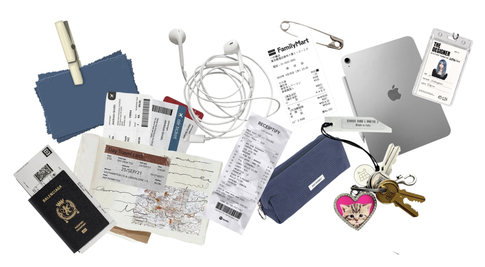

A collection of the objects she carries with her.
Introduction
Interviewer: Cathy | Interviewee: Friend
An interview with a friend about the objects she carries, her personal style, and the stories behind her everyday bag.

A collection of the objects she carries with her.
Interviewer: Cathy | Interviewee: Friend
Cathy: Can you introduce yourself?
Friend: I'm an art student living in New York. I'm interested in art, fashion, and photography. I spend a lot of my time at school working on creative projects, but I also like exploring New York, going to cafés, exhibitions, and different stores.
Cathy: How would you describe your personal style?
Friend: I think my style changes a lot. Sometimes I like to dress simply and comfortably, and other times I like to dress up. I like mixing different pieces and accessories. I think my style is chic and casual.
Cathy: What do you usually carry in your bag every day?
Friend: Besides my iPad and pencil case for school, I carry a lot of random little things. I usually have a mirror, a hair comb, a small bottle of perfume, sunscreen spray, and lip balm. Sometimes I also bring my film camera.
Cathy: Why do you carry so many small things?
Friend: I like being prepared. New York is unpredictable, so you never really know what you're going to need during the day. Maybe I need sunscreen, want to fix my hair, or suddenly want to take a picture. I would rather have something with me than realize I need it and not have it.
Cathy: Would you say your bag is organized or messy?
Friend: Probably somewhere in between. I know where most things are, but someone else looking inside would probably think it's messy. Sometimes there are receipts, random papers, or little things that I forgot about. But I still know where the important things are.
Cathy: Does what you carry change depending on where you're going?
Friend: Definitely. If I'm going to school, I'll have my iPad and pencil case. If I'm just going somewhere with friends, I might bring less. If I know I'll be out all day, I bring more things because I want to be prepared.
Cathy: I noticed you sometimes carry a film camera. Why is that important to you?
Friend: I like taking pictures of random things. It could be a building, a person, food, or something I see while walking. I like film because you don't immediately see the picture. You have to wait, so it makes the moment feel more special.
Cathy: What do you usually photograph?
Friend: Mostly everyday moments. I like photographing things that aren't necessarily supposed to be photographed. Sometimes the lighting is nice, or I just see something that feels interesting. I think the camera makes normal moments feel more important.
Cathy: Is there anything in your bag that has sentimental value?
Friend: Sometimes I keep receipts or little objects from places I've been. They might not be valuable to someone else, but they remind me of a specific day or moment. Someone else might see them as random, but I might remember exactly where I got them.
Cathy: Which object in your bag represents your personality the most?
Friend: Probably the film camera. I think it shows that I'm interested in details and like remembering moments. But I also think the whole combination of things represents me. I have practical things, like my iPad and sunscreen, but I also have things that are more personal, like my camera and perfume.
Cathy: How important is your bag to your personal style?
Friend: Pretty important. I think a bag can change an outfit. Even if you're wearing something simple, a good bag can make the outfit feel more complete. Sometimes I choose my outfit first, and sometimes I already know which bag I want to use and build the outfit around it.
Cathy: Do you think living in New York affects what you carry?
Friend: Definitely. You walk a lot in New York, and you might leave home thinking you'll only be out for a few hours, but then suddenly you're out all day. I like having things with me that make my day easier. Being prepared is probably one of the biggest reasons my bag has so many things.
Cathy: If you had to describe your bag in three words, what would they be?
Friend: Messy, prepared, and personal.
Cathy: Why those three?
Friend: Messy because I have so many random things. Prepared because I like having everything I might need. Personal because most of the things inside are connected to me in some way.
Cathy: If someone who didn't know you looked inside your bag, what would they learn about you?
Friend: They would probably learn that I'm someone who likes to be prepared, but I have a chaotic bag. They would know I'm an art student, that I'm interested in fashion, and that I like photography.
Cathy: Do you think your bag represents you?
Friend: Yeah. I think it's almost like a small collection of my everyday life. None of the things are really that special by themselves. A mirror is just a mirror, and lip balm is just lip balm. But together, they tell you something about the person carrying them. I think that's what makes looking inside someone's bag interesting.